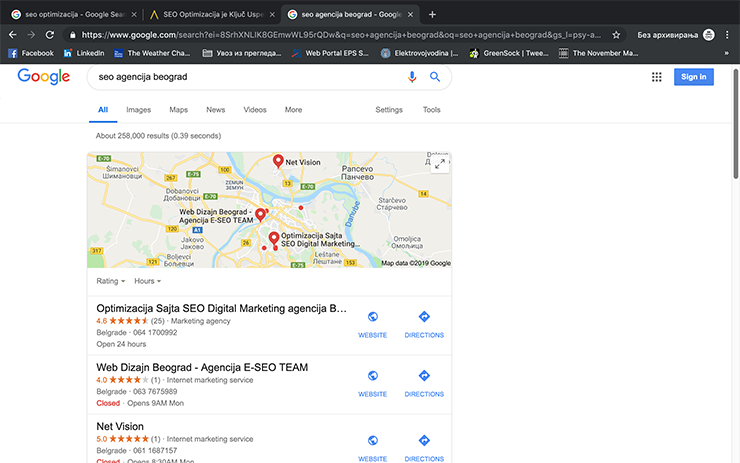
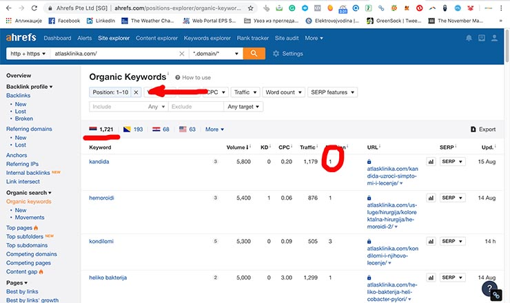

SEO Optimizacija

SEO optimizacija je ključ uspeha svake marketinške kampanje
SEO optimizacija se promenila više nego ijedan marketinški kanal zadnjih par godina. Kroz niz algoritamskih evolucija, SEO je ostao temelj i ključ uspeha svake uspešne digitalne strategije.
51 posto online saobraćaja stiže na veb stranice putem organske pretrage. Ostali saobraćaj dolazi od google ads, referala i direktnih poset.
Ako ste vlasnik preduzeća ili menadžer u preduzeću, želite da poboljšate vidljivost svog poslovanja na internetu, treba vam SEO optimizacija. Potvrdjeno je da su prednosti koje će SEO moći da stvori za kompaniju ogromne. U stvari, to zaista može pomoći vašoj kompaniji da dostigne sledeći nivo i da se takmiči sa većim i uspešnijim kompnijama.
Najveći broj poseta na sajt dolazi preko organskih poseta sa gugl pretrage! #SEO @netVision KLIK za TweetUkoliko ste potpuno novi u konceptu SEO, prvo biste morali da shvatite širok spektar prednosti koje će SEO moći da pruži vašoj kompanijí.
SEO pomaže u poboljšanju vidljivosti na internetu. Jedan od najvažnijih koncepata koji doprinosi boljoj optimizaciji na pretraživaču jesu kvalitetni tekstovi na vašem sajtu. Kvalitetan tekst podrazumeva da je pisan za vašu ciljnu grupu tako da podrži ključne reči i fraze koje se traže na guglu. Na taj način broj poseta ka vašem sajtu kontinuirano raste a samim tim i prihodi.
Svi marketinški stručnjaci se slažu u jednom da je osnovna funkcija marketinga stvaranje brenda.
U procesu brendiranja apsolutno nema sumnje da vam SEO može pomoći. Naš zadatak je podizanje svesti o vašem poslovanju kod šire populacije. Kako to radimo pitate se? Tako što objavljujemo kvalitetne tekstove o vašem poslovanju na najprestižnijim portalima u zemlji kao što su: novosti.rs, politika.rs, rts.rs, b92.net.
Takođe tražimo portale koji su iz vaše branše i sklapamo bolje uslove nego što bi vi dobili, jer mi objavljujemo puno tekstova na mesečnom nivou.
Na taj način podižemo rejting i autoritet vašeg sajta kod gugla. Sa većim rejtingom sve ključne reči koje se odnose na vaše poslovanje napreduju a to nam je cilj.
Naš klijent Atlas Klinika do pre godinu i po dana, bila je potpuno nepoznata široj populaciji a sada imaju 120.000 poseta mesečno.
Tako ćete uz pomoć optimizacije sajta za pretraživače moći da dobijete naziv svoje kompanije na prvih pet mesta na guglu. Ulaganje u SEO smatraju se jednim od najboljih ROI-ja u poslovanju, male su šanse da možete pogrešiti ako se prepustite stručnjacima.
Efekti našeg rada se vide vrlo brzo već posle 3-4 meseca, ukoliko je sajt stariji od 3 godine.
Mi ćemo da uradimo analizu vašeg sajta i da vam izložimo plan i koncept našeg rada, kao i kad možete očekivati konkretne rezultate.
Naš posao je transparentan tako da svaki mesec dobijate izveštaj šta je sve uradjeno u toku meseca, gde su objavljeni tekstovi, kako napredujemo na guglu.
Ukoliko želite da nama prepustite ovaj proces pozovite nas na 061 16 87 157 i zakažite sastanak sa nama biće nam drago da učestvujemo u poboljšanju vašeg poslovanja.
Evo najčešćih pojmova i pitanja u vezi sa SEO optimizacijom
SEO zahteva nove veštine, nove pristupe za uspeh u sve većoj konkurenciji. Google pretraga se drastično promenila, postala je dinamična. U google pretragama su sad nove stvari, mape, video, slike, proizvodi, featured snipet, top stori, slična pitanja, sajt linkovi itd.
SEO zahteva sintezu višestrukih disciplina i dobru strategiju za postizanje optimalnih rezultata. U srcu svega je ipak ono što od čega je sve krenulo a to je tehnički aspekt SEO optimizacije sajta.
Važnost SEO optimizacije počinje željom kompanija da imaju što više organskih neplaćenih poseta ka sajtu. To se postiže SEO optimizacijom.
„Seo optimizacija sajta, podrazumeva niz aktivnosti, koje se preduzimaju sa ciljem, da se klijentov sajt bolje rangira na pretraživaču. Ostvari više organskih poseta ka sajtu, i tako pospeši prodaja ili vidljivost na google.rs.
Upoznaćemo vas sa najbitnijim terminima SEO optimizacije kako bi shvatili ceo proces.
Optimizovanje sajta za korisnike
Obezbeđivanje pristupačnosti sadržaja za sve glavne pretraživače i društvene mreže.
Kreiranje sadržaja koji angažuje pravu publiku.
Da podižu svest o Brendu i podižu autoritet sajta pred guglom i posetiocima.
Search Engine Result Page ili SERP se odnosi na stranicu koja se prikazuje kada se određeni upit za pretraživanje unese preko pretraživača. Pored prikaza liste rezultata, SERP može uključiti i reklame, video, mape, proizvode itd.
Pored 200 i više stavki u algoritmu po kojima gugl odredjuje pozicioniranje 3 se izdvajaju:
- rejting i autoritet sajta
- sadržaj ili content
- backlinkovi
- meta tagovi
- performanse sajta
Opširnije možete pročitati najnovije SEO smernice za 2019 godinu. Šta uraditi na samom sajtu kako bi bili dobro pozicionirani.
Sajt postiže veću vidljivost na internetu.
Logika je jednostavna: prva strana gugla dovodi do više posetilaca na sajt a samim tim do veće prodaje i vidljivosti na internetu.
Onpage se radi na samom sajtu, mi smatramo da sve ove nabrojane stavke su od izuzetnog značaja za pozicioniranje na guglu. Ukoliko večina ovih stavki nije kako treba, imaćete velikih problema da pozicionirate vaš sajt.
- SSL sertifikat od poverenja
- Brzina učitavanja websajta ispod 3 sekunde
- Optimizovan za mobilne i tablet uredjaje
- Kvalitetan sadržaj
- Ključne reči kao duže fraze
- Pravilna upotreba H tagova
- UI (User interface) i UX (User expirience) sa visokim ocenama;
- Unutrašnja infrastruktura sajta
- Google Rich snipet (Schema.org)
- Google Featured snipet
- Čist kod
Pročitajte opširnije na našoj stranici seo onpage optimizacija.
Offpage podrazumeva aktivnosti koje se rade van websajta, na neki način to je promocija i reklamiranje sajta, sa ciljem da se dođe do više posetilaca i poveća rejting samog sajta kod gugla. To se postiže na sledeće načine.
– građenje linkova prema sajtu (link building). Treba da budu što kvalitetniji i relevantniji, da dolaze sa popularnih sajtova koji imaju visok rejting. Samo onaj ko ima rejting može i da prenese na drugog.
Više o ovoj temi na našoj stranici seo offpage optimizacija
Google koristi indeksiranje da bi sakupio stranice relevantne za upite na pretraživaču i kreirao indeks koji uključuje određene reči ili pojmove za pretraživanje i njihove lokacije.
Pretraživači odgovaraju na upite korisnika tako što pretražuju indeks i prikazuju najrelevantnije stranice.
Organski rezultati označavaju prikaz najrelevantnijih veb stranica za upit pretraživanja unesen od strane korisnika. Takođe se naziva i prirodni rezultati pretrage. Postizanje višeg ranga u organskom rezultatu nad pretraživačima je sama svrha SEO optimizacije.
Plaćeni rezultati znače upravo suprotno od organskih rezultata. Prikazuju se plaćeni oglasi iznad organskih rezultata. Postoje 3 ili 4 pozicije.
Vlasnici veb stranica uplaćuju Guglu da prikažu svoj veb sajt za određene termine pretraživanja ili ključne reči iznad organskih poseta tzv. plaćeni oglasi. Plaćeni rezultati prikazuju se kada neki korisnik unese upit za pretraživanje sa tim ključnim rečima. Sajt bude prisutan na prvim pozicijama dok ima budž,et kad se ispuca dnevni budžet gugl ih sklanja sa rezultata pretrage
Ključne reči i fraze bliže odredjuju nečiju delatnost. Uključene su u sadržaj samog sajta, koji pomaže korisnicima da pronađu određenu veb stranicu unosom relevantnih upita za pretraživanje preko pretraživača.
Na primer neko traži pvc prozor, on ukuca tu ključnu reč i izadju mu sajtovi koji prodaju ili pričaju o pvc prozorima.
Long tail fraze ili ključne reči su fraze koje sadrže više od 4 reči koje rezultate pretraživanja čine specifičnim. Na primer neko postavi pitanje Koja SEO agencija se nalazi u mojoj blizini? Sve češće će takvi upiti biti na gugl pretraživaču.
Tako da SEO optimizaciju sajta treba voditi i ka tim dužim frazama koje će biti sve važnije narednom periodu.
SEO optimizacija zahteva kvalitetne alate kako bi raspolagali relevantnim podacima. Najbolje alatke su guglove alatke a to su: google analytics i google webmaster tools. GA je nezamenjiva, koristi se za analizu poseta, ko i šta čita, koliko se zadržava na sajtu, odakle su došli na sajt, dal preko organic search-a, referala ili direktnih poseta.
A GWT pokazuje dal sajt ima tehničke probleme (puknute stranice, server ne radi, sadržaj na mobilnom nije prilagodjen itd.).
Takodje, možemo videti učinak tj. koliko je upita bilo za neku frazu, koliko je puta neko kliknuo na vaš sajt, koliki je CTR, koja je pozicija vaših ključnih reči. Na osnovu svih ovih informacija možete da unapredite sajt klijenta.
Naša SEO agencija Net Vision, koristi pored ovih i profesionalne alate koji se plaćaju kao što je ahrefs.com preko koga možete analizirati i konkurenciju, videti koliko se koja ključna reč traži pa onda uporediti sa sajtom koji je prvi na prvoj strani pa se tako dodje do relevantnih podataka.
Canonical URL-ovi se odnose na koncept odabira najbolje URL adrese za veb stranice koje posetioci žele videti. Takođe, poznati kao kanonske oznake, ovi URL-ovi pomažu u udruživanju sadržaja kada više verzija iste stranice postanu dostupne preko Interneta. Dakle, koristi se za rešavanje pitanja vezanih za dupliciranje sadržaja.
Na primer, većina ljudi bi to smatrala istim URL-ovima:
vvv.ekample.com
ekample.com/
vvv.ekample.com/indek.html
ekample.com/home.asp
Ali tehnički svi ovi URL-ovi su različiti.
SEO friendli URL-ovi se koriste za optimizaciju strukture i upotrebe reči u URL-ovima, tako da se proces indeksiranja veb sajta od strane pretraživača poboljša.
SEO tehnike, kao što su stavljanje ključnih reči i pravilna dužina i struktura fajlova u URL-ovima, pomažu u poboljšanju rangiranja veb sajtova i poboljšanju navigacije na veb sajtu
Povratne veze se nazivaju i dolazni linkovi ili backlinkovi koji pomažu korisnicima da pređu sa jedne veb stranice na druge veb stranice. Ovi linkovi igraju važnu ulogu u SEO optimizaciji.
Kada Google pretraživač pregleda višestruke povratne veze sa kvalitetom stranice, smatra da je stranica relevantnija za upit za pretraživanje, što pomaže u procesu indeksiranja i poboljšava organsko rangiranje na SERP-ovima.
Više o backlinkovima i gradjenju linkova pročitajte na našoj stranici backlink tutorijal
nterno linkovanje je proces pružanja hiperveza na veb stranicama koje se povezuju u okviru istog domena. To je još jedan način usmeravanja posetilaca sa jedne veb stranice na drugu na istom sajtu.
Interno linkovanje je jako bitno kod SEO optimizacije jer pomaže robotima pretraživača da lako opažaju i indeksiraju sve unutrašnje stranice veb sajta / bloga.
Takvi linkovi pomažu u izgradnji hijerarhije informacija, a pritom podižu rejting stranica i omogućavaju posetiocima da se pravilno kreću po stranicama.
Odlazna veza je hiperveza koja pokazuje na ciljani ili eksterni domen. Na primer, ako na svom veb sajtu navedete linkove drugih veb stranica trećih strana, to će biti eksterne veze ili odlazni linkov.
Izlazni linkovi imaju veliku važnost u SEO optimizaciji jer pružaju vašim veb stranicama više kvaliteta i vrednosti za rangiranje na pretraživačima. Google pretraživač broji izlazne veze kao glasove trećih strana koje poboljšavaju rangiranje vaše veb stranice.tu
Gledajte da to budu sajtovi sa najvećim autoritetom.
Smatra se da je jedan od najuticajnijih SEO faktora, autoritet domena ključna metrika performansi, koja ocenjuje bilo koju veb lokaciju na skali od 1-100.
Što je vaš DA veći, veća je verovatnoća da će vaš sajt imvelikiažan saobraćaj i visoko rangirnanje na guglu.
Google penal je u stvari kazna ili negativan uticaj na rangiranje sajta na pretraživaču na osnovu ažuriranja Googleovih algoritama pretrage ili ručnog pregleda.
Uglavnom dolazi kad se pretera sa SEO optimizacijom koju vode ne stručni ljudi.
Google je već odavno uvrstio u pretragu vašu trenutnu lokaciju. Cilj ovoga je da ako živite u Borči i tražite auto školu, dobijete rezultate iz vaše okoline.
Kao što ste primetili, kad ukucate ključnu reč i lokaciju, pojavljuju se Google Maps sa rezultatima pretrage slika ispod.
Da bi i vi bili na ovim rezultatima pretrage morate se prijaviti u google business maps.
Smatramo da je ovo obavezan korak u gradnji vašeg internet biznisa i pobolj[anju SEO optimizacije.
Više o Lokalni SEO i google mape
Postoje i prečice, tehnike koje nisu dozvoljene (tz. black hat tehnike). Preko blackhat-a sajt može vrlo brzo stići na prvo mesto. Google i drugi pretraživači su sve bolji u prepoznavanju ovih nedozvoljenih tehnika.
Novi algoritmi (Panda, Penguin, Hummingbird) su sve bolji, i ako vas uhvate, vaš sajt se kažnjava, pada u rangiranju, i jedino šta preostaje je dizajniranje novog vebsajta.
Za renomirane firme koji drže do sebe, to je katastrofa, tako da je najbolje držati se poštenih i korektnih stretegija koji ne donose rezultate tako brzo, ali na duge staze donose uspeh.
Mi imamo deceniju iskustva u ovoj oblasti, naši klijenti su najveći privredni subjekti u Srbiji: Addiko banka, Atlas Klinika, Atlas Estetika, Talaris, Splav Akapulko, Schoeller Allibert, Tatina Slatka Kuća, Bojleri Renome, Modni Studio Gajić, Auto škola Fest, Domovi za stare, Apartmani Beograd i dr. strani klijenti
Ukoliko želite da vam mi radimo SEO optimizaciju možete se odlučiti za neki od SEO paketa ili nas pozvati da vam mi predložimo najbolju opciju.
Pročitajte najvažnije SEO trendove u 2019 godini. .
Osnovni SEO paket - Vrabac – 350 evra/mesečno
Šta spada u osnovni paket:
– Analiza poseta sajtu (mesečno)
– Analiza i ispravka blokiranih resursa (mesečno)
– Analiza konkurencije (top 2, svaka 3 meseca)
– URL Errors provera i ispravka po potrebi (mesečno)
– 301 redirekcije po potrebi (mesečno)
– Provera crawl statistike (mesečno)
– Sređivanje meta tagova (do 5 strana)
– Upisi u direktorijume
– Objavljivanje tzv content linka uz pisanje originalnog sadržaja (2 mesečno)
– Pisanje i objavljivanje kvalitetnog teksta na Blogu (1 mesečno)
Kome se preporučuje?
Osnovni paket SEO optimizacije preporučuje se malim preduzetnicima, firmama koje ciljaju lokalne posete do 3 ključne reči niže konkurentnosti
Standardni SEO paket - Golub/550 evra
Šta spada u standardni paket:
– Analiza poseta sajtu (nedeljno)
– Analiza i ispravka blokiranih resursa (nedeljno)
- Monitoring ključnih reči, pozicije na googlu
– Analiza konkurencije (top 10, svaka 3 meseca)
– Detaljna provera duplog sadržaja
– URL Errors provera i ispravka po potrebi (nedeljno)
– 301 redirekcije po potrebi (mesečno)
– Provera crawl statistike (nedeljno)
– Rich markup
– Sređivanje meta tagova na svim stranama (do 50)
– Upisi u direktorijume za koje se plaća članarina
– Objavljivanje tzv content linka uz pisanje originalnog sadržaja (3 mesečno)
– Objavljivanje kvalitetnih tekstova na blogu (3 mesečno)
– Promocija na društvenim mrežama tih tekstova
Kome se preporučuje?
Standardni paket SEO optimizacije preporučuje se uglavnom do 30 ključnih reči nešto jače konkurentnosti, sa ciljanjem na posete iz cele Srbije.
Profi SEO paket Soko – 750 evra/mesečno
Šta spada u profi paket:
– Izrada strategije potpuno prilagođene klijentovom sajtu
- Analiza niše, traženje ključnih reči koje donose posete
- Monitoring ključnih reči, pozicije na googlu do 300
– Analiza konkurencije (top 10, mesečno)
– Analiza poseta sajtu (nedeljno)
- Zaštita wordpress sajtova (monitoring na malwere, spam poruke, čišćenje, održavanje)
– Analiza i ispravka blokiranih resursa (nedeljno)
– Detaljna provera duplog sadržaja
– 404 provera i ispravka po potrebi (nedeljno)
– 301 redirekcije po potrebi (nedeljno)
– Provera crawl statistike (nedeljno)
– Rich markup
– Sređivanje meta tagova na svim stranama
– Upisi u direktorijume za koje se plaća godišnja članarina
– Pisanje i objava 4 unikatna teksta na drugim portalima u svrhu zdravog linkbildinga (uključujući najjače sajtove RTS, Kurir, B92, Telegraf, Mondo itd.) kao i pisanje 4 teksta na Blogu
- Pisanje 3 kvalitetna teksta na vašem Blogu
– Poboljšanje autoriteta, relevantnosti i poverenja vašeg Brenda na internetu
– Promocija tih tekstova putem društvenih mreža sa raznih naloga
– Bustovanje postova objavljenih tekstova
Kome se preporučuje?
Profi SEO paket - Soko, razlikuje se od prva dva paketa, jer posle 6 meseci (ukoliko je sajt stariji od 5 godina) garantujemo pozicioniranje najmanje 10 relevantnih ključnih reči koje donose posete. Ukoliko to ne bude slučaj vraćamo novac. Preporučuje se za niše gde vlada velika konkurencija i za srednja i velika preduzeća.
Sajt se gura i SEO otpmizuje za veliki broj ključnih reči, što doprinosi velikom povećanju organskih poseta.
Primer Atlas Klinika koja je rangirana na guglu za 1700 raznih fraza u prvih 10 pozicija na guglu ili ukupno za 5500 ključnih reči
Slika u prilogu preko ahrefs alatke.
Vaš Net Vision Tim!
Prepustite SEO optimizaciju da rade ljudi kojima je to posao, strast i koji imaju rezultate!
Pozovite nas 061 16 87 157 Saša Rebić
Name: Sasa Rebic Website: NetVision Title: SEO expert u NetVision

SEO smernice za 2019 godinu
Pročitajte na šta treba da obratite pažnju u 2019 godini....
Detaljnije...

Linkbuilding Tutorijal za 2019
Zašto su backlinkovi i dalje najvažniji za optimizaciju sajta...
Detaljnije...

Kad dolaze SEO rezultati?
Kada SEO počinje da generiše veću prodaju, kad dolazi rangiranje...
Detaljnije...